Строительство домов и коттеджей
Каркасные дома в Череповце под ключ по цене застройщика
Каркасные дома в Череповце от застройщика возможность в течение одного сезона стать обладателями загородного жилья или коттеджа в черте города. Основные выгоды каркасного строительства по сравнению с другими технологиями это быстрая скорость работ, доступная цена и положительные эксплуатационные характеристики готового здания.
Отделка каркасного дома
Каркасный дом может быть облицован любым фасадным материалом: вентпанели, сайдинг, керамический кирпич, вагонка, декоративный отделочный камень и прочее. Таким образом, можно создать любой стиль постройки. Комбинация отделочных материалов может придать индивидуальность зданию и выделить коттедж среди прочих домов.
Каркасные дома в эксплуатации
Нас часто спрашивают: удобны ли каркасные дома для проживания и чем они лучше или хуже кирпичных построек?
Неоспоримое преимущество экономичность каркасного дома из термопрофиля в обслуживании. Его не только дешевле построить, но и проще содержать. К примеру, расходы на отопление в каркасном доме ЛСТК ниже, чем в кирпичном коттедже. Особенно разница видна, если коттедж используется не для постоянного проживания. Уже в первую зиму расходы на отопление дома ЛСТК будут существенно ниже, чем обогрев кирпичного здания.
Каркасный дом: что можно построить из ЛСТК
Типовой каркасный дом ЛСТК одноэтажное здание + мансарда или дом на полноценных 2 этажа. Большая этажность (3 этажа) характерна для многоквартирных домов.
Каркасный коттедж как основное здание может быть дополнен пристройкой: гаражом или техническим помещением. Эстетику участка поможет создать возведение беседки или летней кухни, которые также могут быть пристроены к зданию или располагаться отдельно от него.
Мы строим каркасные дома для конечного клиента и сотрудничаем с застройщиками коттеджных поселков. Работаем в любом городе России. Преимущество также в том, что мы разрабатываем проекты каркасных домов и адаптируем проект дома под ЛСТК. На сегодняшний день портфолио работ ПГ Наш город по строительству домов больше 100 сданных объектов. Посмотрите примеры наших работ.
Каркасные дома под ключ: фото наших работ
 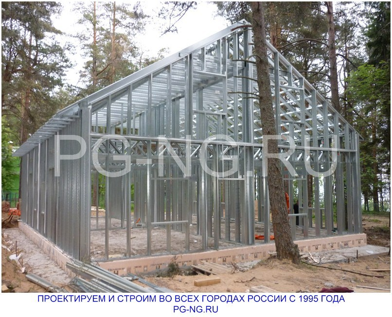
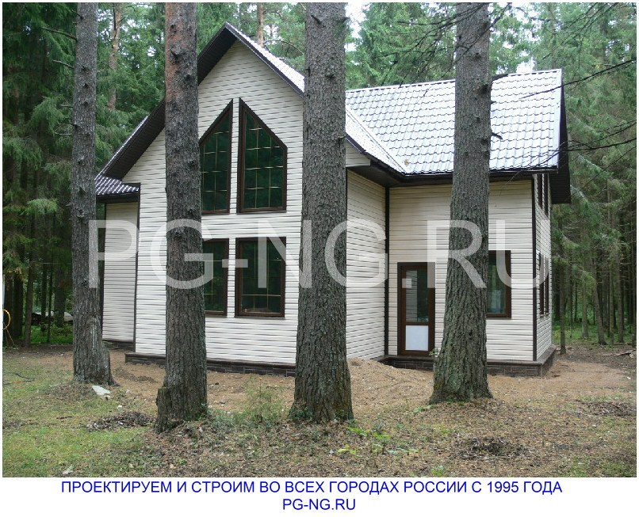
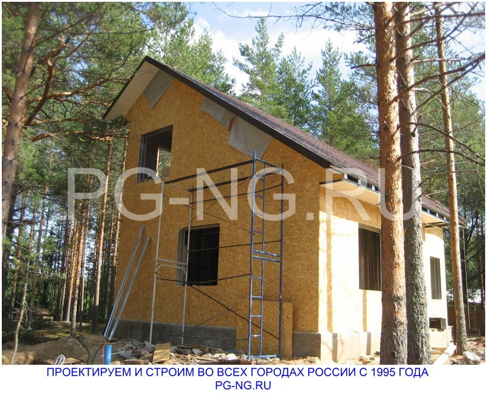
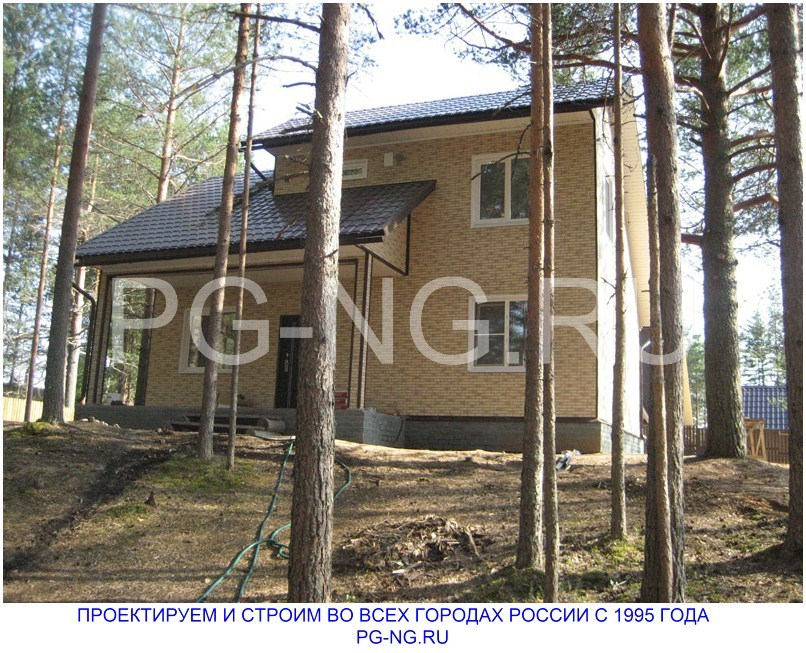
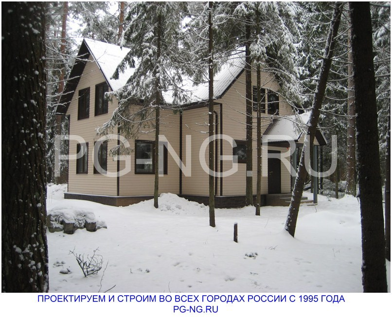
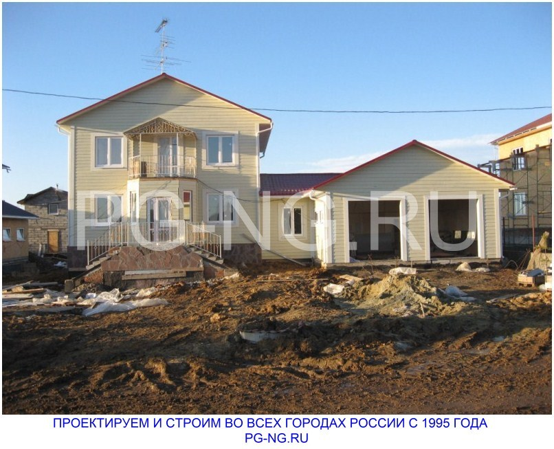
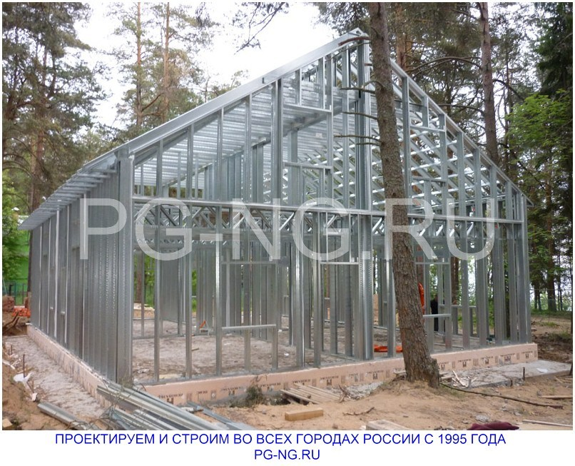
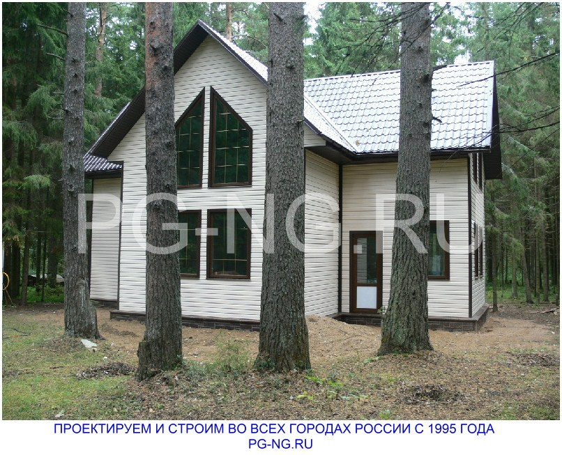
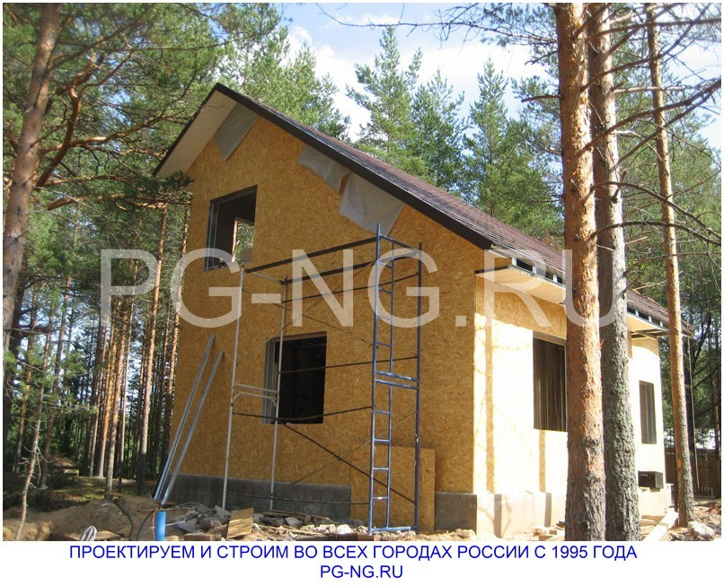
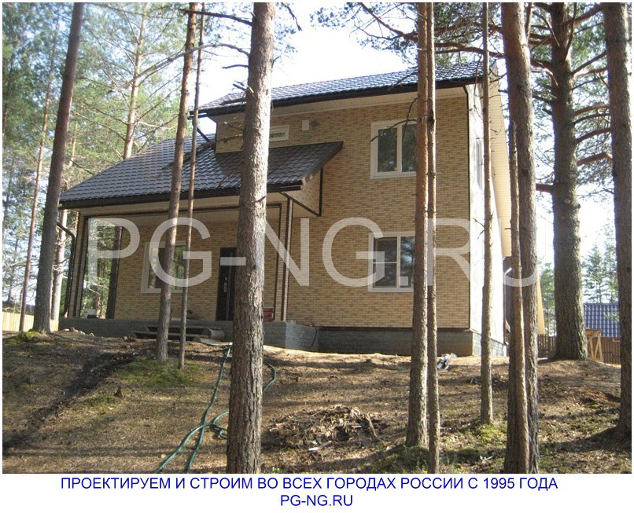
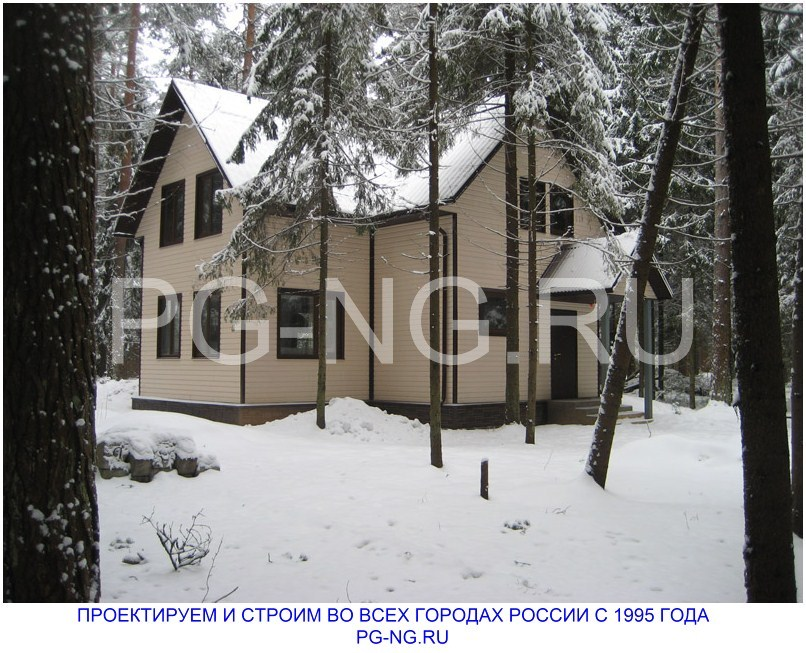
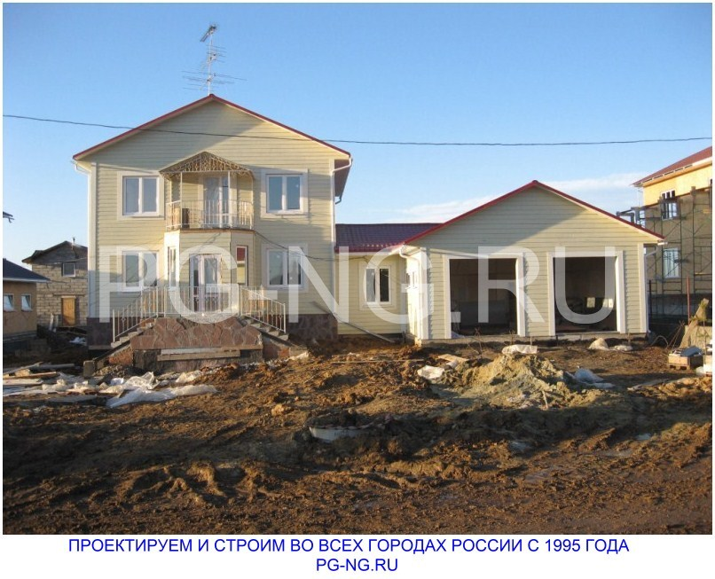